version 1.8.0 (2022-10-12)
Cocoda should be usable with any modern web browser (at least Firefox and Chromium). The application requires at least HD resolution (1366×768) but FHD (1920×1080) or more is highly recommended. Using Fullscreen also shows pictures better.
The user interface is divided into several cards which can be resized and arranged in different configurations. Most of these cards are implemented as components which can also be used in other web applications.
By default, the left and right side of the interface allow browsing in concept schemes to inspect and select concepts from source and target vocabulary respectively.
In between there are several cards to create, modify, browse, and evaluate mappings and mapping recommendations.
All cards can be hidden with a minimize button in the top right of each card and resized by dragging on the divider line between cards.
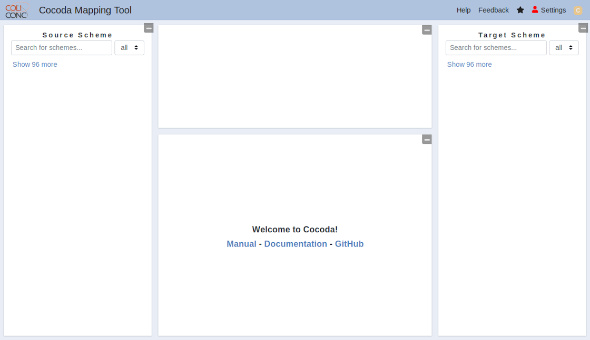
To log in, simply click on the ‘Settings’ button in the menu bar.
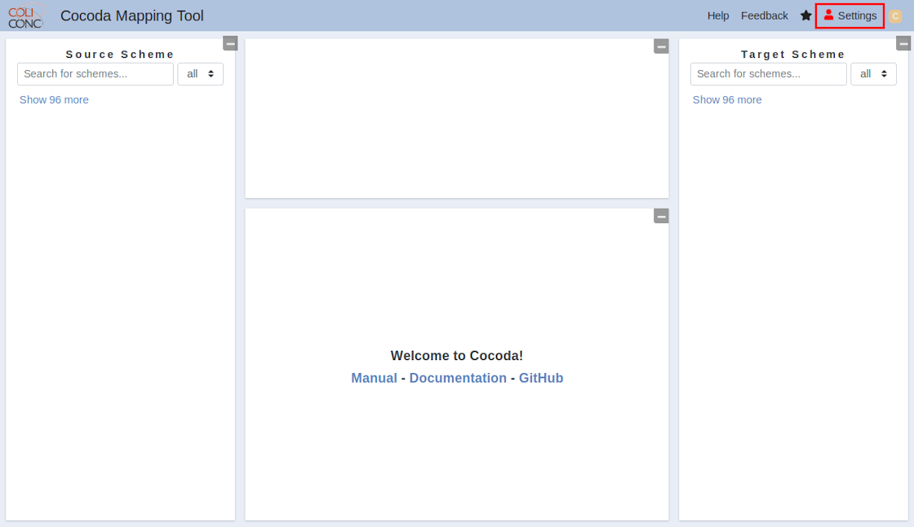
On the settings screen under the tab ‘Accounts’, click on one of the available login buttons (currently GitHub, ORCID, and VZG LDAP). You will be required to authenticate with the respective service and confirm that you’d like to use your account to log in with our service.
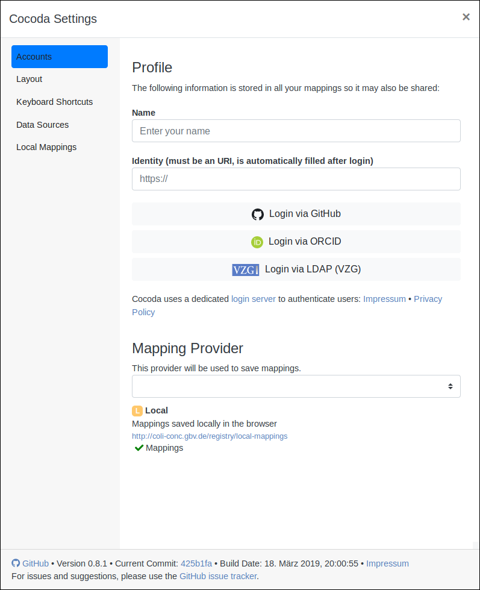
After you logged in, the pages should look like this:
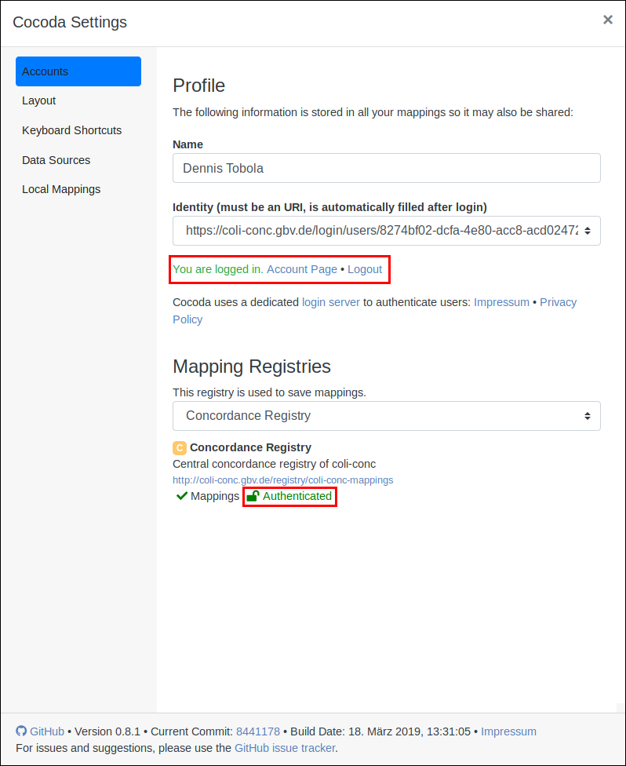
You can now change the registry to save your mappings between ‘Local’ (your browser) and ‘Concordance Registry’ (database from the GBV). You can also change your display name and the identity which will be stored in the mappings you save.
By clicking on ‘Account Page’, you will be forwarded to a separate Login Server page. Here you can inspect your information, add or remove connected accounts, log out, or delete your user account. Deleting your account will immediately remove your data from the database, but already created accounts will still contain your identity information.
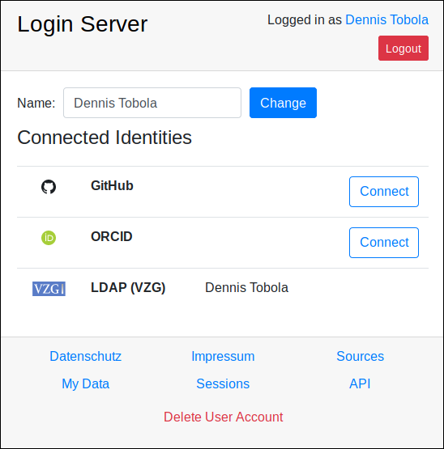
When logged in, you will also see either a green icon (see screenshot) or the chosen identity provider’s icon next to your name, as well as the registry which is used to save mappings.
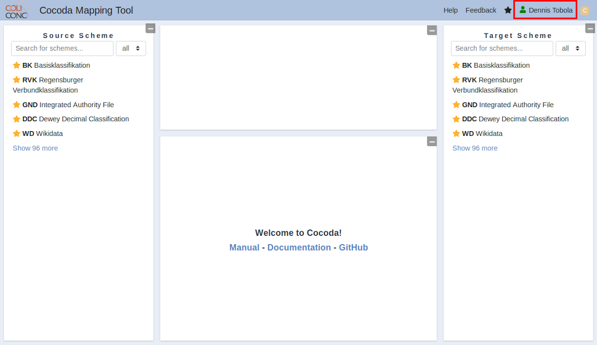
Individual knowledge organization systems are referred to as concept schemes or just schemes. Concept schemes are also known as ontologies, (controlled) vocabularies, taxonomies, and terminologies. Cocoda provides access to multiple concept schemes from multiple sources.
A concept scheme is an organized collection of concepts and additional information about the concept scheme. Cocoda recommends all concept schemes to be registered in the Basel Register of Thesauri, Ontologies & Classifications (BARTOC) and to use its identifiers for to uniquely refer to indivial concept schemes.
To give an example the Dewey Decimal Classification (DDC) is a concept scheme of type universal library classification, published by OCLC and registered in BARTOC with URI http://bartoc.org/en/node/241.
The details card shows a scheme’s or concept’s detailed information. In case of a scheme it currently shows the notation, label, license, publisher, and identifier. It will also show a scheme’s top concepts if the tree view is minimized. In case of a concept it currently shows a concept’s ancestors, its notation and preferred label, notes (scope notes and editorial notes), register entries and additional labels, identifiers, GND terms, and narrower concepts. In most cases, not all of these informations are available for a concept.
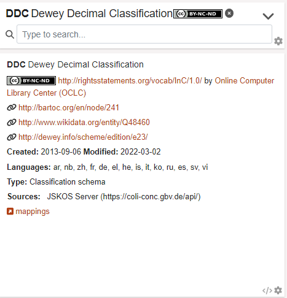
A concept identifies and individual object such as a person, a place, or a topic. Most concepts have at least a possibly unique preferred label, a unique notation, and a globally unique URI.
The left and right side of Cocoda user interface allow browsing in a concept scheme to search, inspect, and select individual concepts. Each concept browser at the left and the right side of the interface consists of:
a dropdown menu on the top to select a concept scheme
a search field to find concepts in a selected scheme by notation or label
a card that shows details about the selected scheme or the selected concept
a concept tree for hierarchical browsing if the selected scheme is a classification or taxonomy
A list of bookmarked concept schemes is shown if no concept scheme was selected.
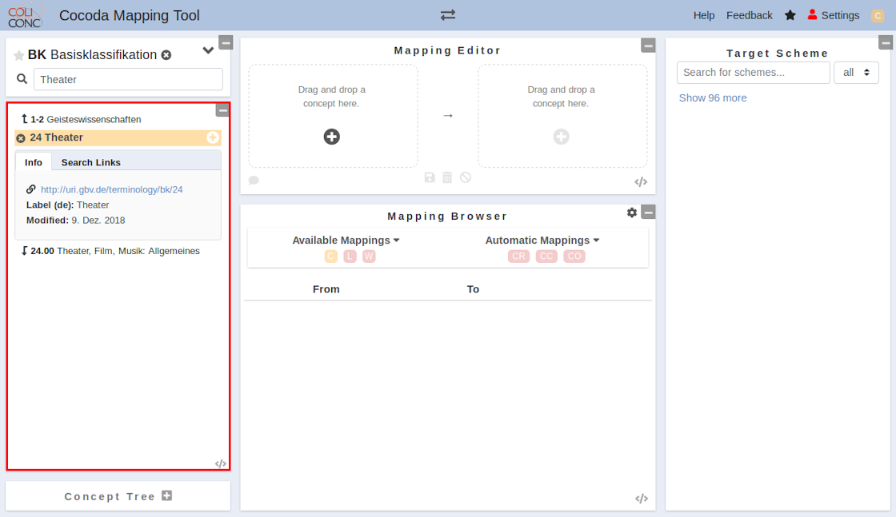
If the selected scheme supports hierarchical navigation, the concept tree will show the top concepts. Clicking on a concept in the tree view will select the concept and show its details in the detail card. You can show a concept’s narrower concepts by clicking on the arrow beside the concept in the tree. Double clicking a concept will both select it and show its narrower concepts. You can also use the detail card to browse by clicking on a concept’s ancestors (at the top) and narrower concepts (at the bottom). 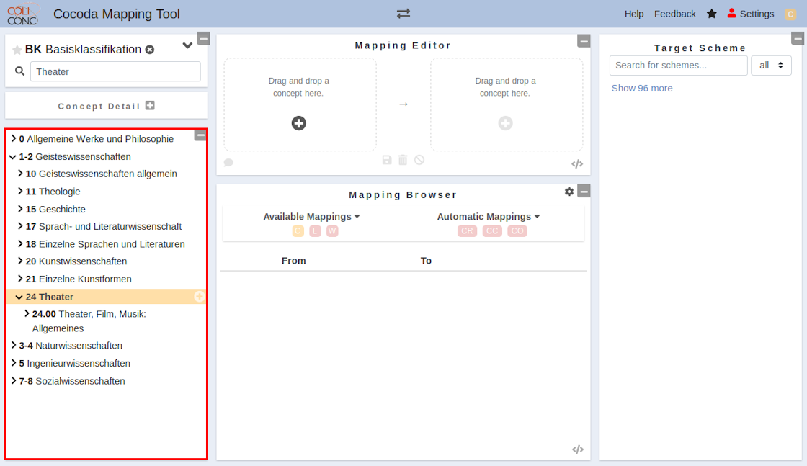
The central part of the user interface shows multiple cards to create, modify, browse, and evaluate mappings. A mapping is a directed connection between one concepts and one or more concepts from another concept scheme (more complex mappings may be supported in a later release).
Mappings can be managed with:
a mapping editor to create and modify individual mappings
a mapping browser that lists existing mappings (from local storage or a mapping provider) as well as mapping recommendations (currently occurrences and co-occurrences of selected concepts)
To add a concept to the mapping, you first have to select the concept (by clicking on it in the tree view, detail view, or anywhere else) and then clicking the plus (+) button on the bottom of the mapping editor (alternatively you can click the (+) button next to the concept in the detail card). You can also quickly add concepts from the tree view by clicking on the small plus button on the right of the concepts. Additionally, you can just drag and drop concepts into the Mapping Editor. In the middle of the mapping editor, you can choose the type of the mapping (exact match, close match, broader match, narrower match, related match, or mapping relation). At the bottom of the card, there are different action buttons for saving a mapping, deleting a mapping, clearing the editor, and exporting the mapping (in that order). The faint background of the card depicts whether the current mapping is saved (green) or not yet saved (red). As of now, you can only save a mapping locally in your browser. In the future, you will be able to authenticate and contribute mappings to a database.
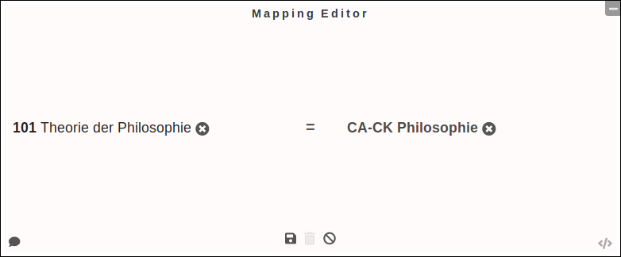
The mapping browser shows existing mappings as well as mapping recommendations for selected concepts from the source and target schemes. At the top of the card, it is possible to select and deselect different sources. Currently available are:
For each mapping or mapping recommendation, there are some available actions on the right of each row: - Edit: saves the mapping or recommendation to local storage and loads it into MappingEditor for editing. - Save: saves the mapping or recommendation to local storage (not available for local mappings or if it’s already in local storage). - Delete: deletes a mapping (currently only available for local mappings).
A registry is an individual source of data about concept schemes, concepts, mappings etc. An example is the public concordance registry with concordances and mappings collected in project coli-conc.
Registries can be configured via the registries field in the configuration. The technical access to data from a registry is implemented via providers.
Configured mapping registries can be enabled and disabled in the mapping browser to show or hide their mappings.
In the settings at the tab ‘Layout’ you can change the handling of the site or the language.
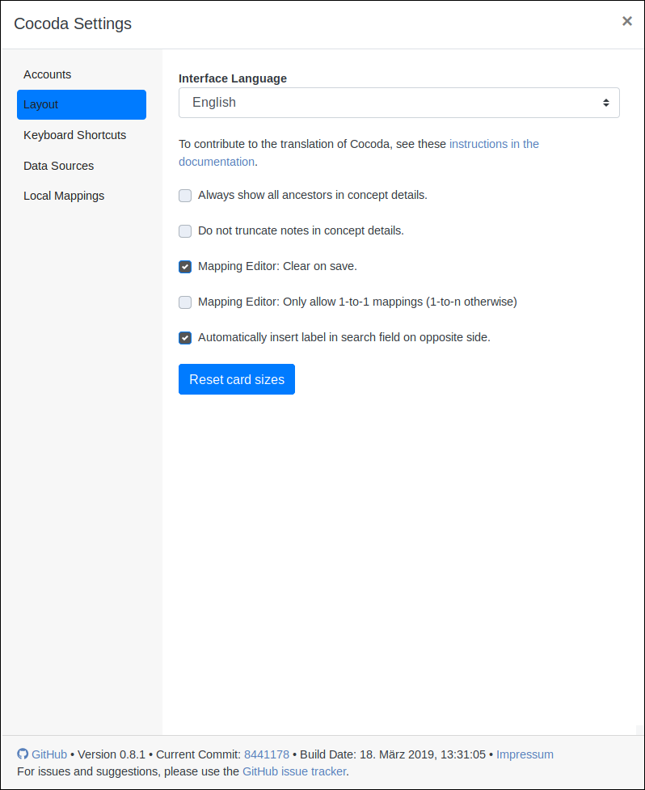
At the tab ‘Keyboard Shortcuts’ you can check out keyboard-shortcuts
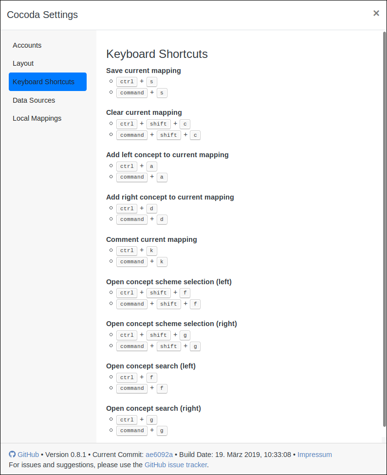
At the tab ‘Data Sources’ you can get an overview of all sources of the cocoda-data
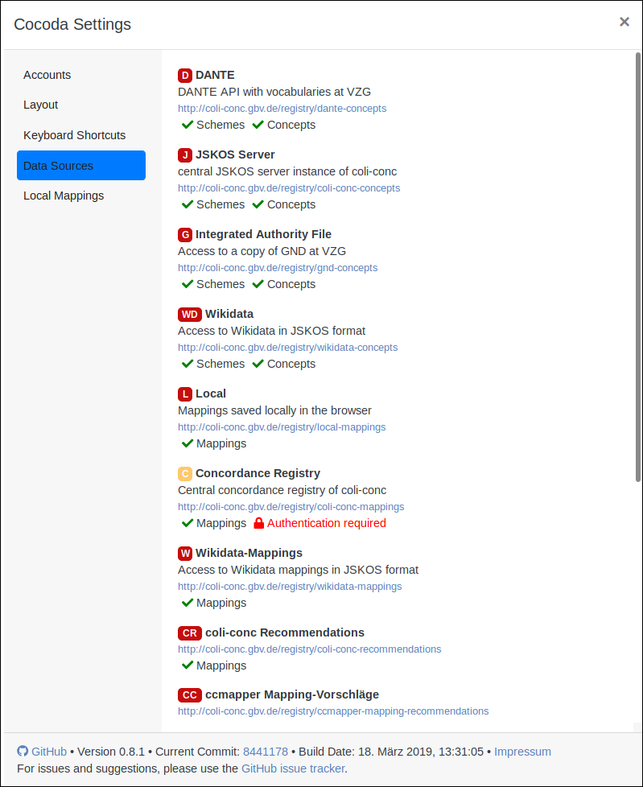
At the tab ‘Local Mappings’ you can upload, download delete and rewrite the creator of the local mappings (Local Mappings are only saved in your browser).
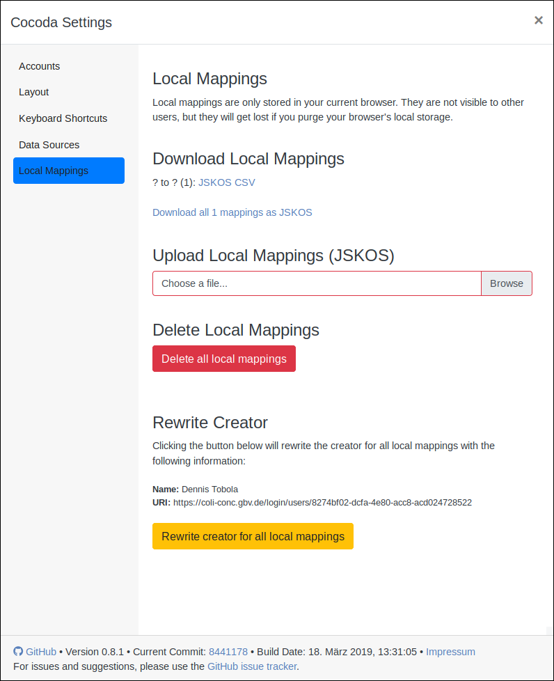